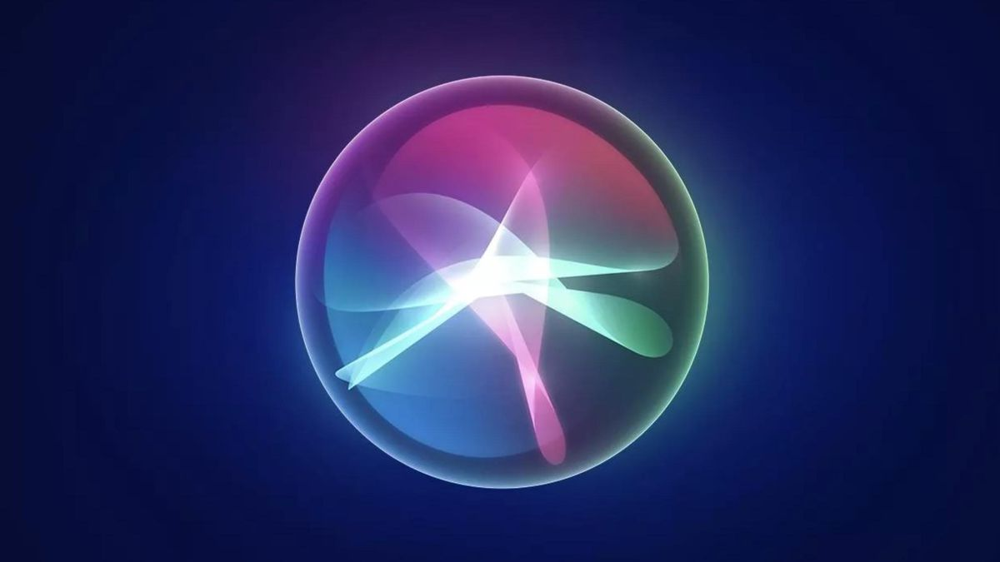
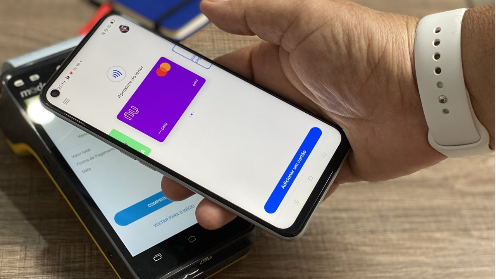
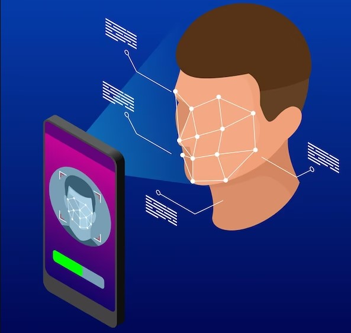
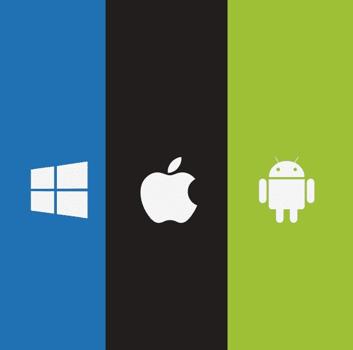

Os dispositivos mobile surgiram no final da década de 1970, mas eram grandes e caros. Na década de 1980, surgiram os telefones celulares portáteis e a tecnologia evoluiu rapidamente. A partir dos anos 2000, os celulares se tornaram cada vez mais sofisticados, com recursos como internet, câmeras e GPS. Hoje, os smartphones são uma parte essencial da vida moderna. Como sabemos, apenas com um dispositivo móvel é possível ter acesso a qualquer tipo de informação, realizar compras de mercadorias de qualquer tipo, comunicar-se com qualquer pessoa no mundo entre outros diversos recursos que trazem conforto para a sociedade.
Câmeras nos celulares modernos
Os celulares atuais contam com câmeras de alta qualidade, podendo inclusive substituir câmeras profissionais. A apple sempre foi refência quando se diz respeito a fotos seu último lançamento, o iPhone 14 é capaz de capturar fotos e vídeos de alta qualidade, com recursos como o modo Retrato, que usa inteligência artificial para criar efeitos de profundidade de campo em fotos de retrato, e o Night mode, que permite que os usuários capturem fotos em ambientes com pouca luz. No entanto, se você é um fotógrafo profissional ou entusiasta e procura recursos avançados de fotografia, ainda é recomendado investir em uma câmera profissional.
Touch Screen
A tecnologia touchscreen, ou tela sensível ao toque, tem uma longa história que remonta a mais de meio século. O primeiro dispositivo com tela sensível ao toque foi desenvolvido em 1965 por E.A. Johnson, um engenheiro da Royal Radar Establishment, em Malvern, Reino Unido. A tela era resistiva, ou seja, usava duas camadas de material condutivo separadas por espaçadores para detectar toques. Ao longo dos anos, a tecnologia touchscreen evoluiu e foram desenvolvidos novos tipos de telas sensíveis ao toque, incluindo a tecnologia capacitiva, que usa uma camada de vidro revestida com um material condutor para detectar toques, e a tecnologia de onda acústica de superfície, que usa ondas sonoras para detectar toques na tela.
Assistente Virtual

Os assistentes virtuais dos celulares são programas de computador que usam tecnologias de processamento de linguagem natural e inteligência artificial para interagir com os usuários por meio de comandos de voz ou texto. Esses assistentes são capazes de realizar uma ampla gama de tarefas, desde enviar mensagens e fazer ligações até controlar dispositivos domésticos inteligentes e realizar buscas na internet. Como podemos observar, os assistentes virtuais estão sendo expandidos para fora dos dispositivos móveis, como é o caso da Alexa, que é capaz de realizar diversas tarefas como por exemplo: apagar e acender luzes, tocas músicas, fechar cortinas entre diversas outras funcionalidades.
Pagamentos móveis

Os celulares podem ser usados como cartões por meio da tecnologia NFC (Near Field Communication), que permite a comunicação sem fio de curto alcance entre dispositivos compatíveis. Através do NFC, os usuários podem armazenar informações de pagamento, como cartões de crédito e débito, em seus dispositivos móveis e usá-los para fazer pagamentos em lojas físicas que aceitam esse tipo de tecnologia. Uma das principais vantagens do uso de celulares como cartões é a praticidade e a segurança. O processo de pagamento é rápido e fácil, e os usuários não precisam carregar cartões físicos ou digitar senhas em terminais de pagamento. Além disso, muitos aplicativos de pagamento móvel usam tecnologias de segurança avançadas, como autenticação biométrica, para proteger as informações de pagamento dos usuários.
Aplicativos
Os aplicativos móveis são programas de software desenvolvidos para serem executados em dispositivos móveis, como smartphones e tablets. Eles permitem que os usuários realizem uma ampla gama de tarefas, desde enviar mensagens e fazer ligações até realizar compras on-line, controlar dispositivos inteligentes e jogar jogos. Os aplicativos móveis são projetados para funcionar de forma eficiente em dispositivos móveis, aproveitando ao máximo as capacidades do hardware e do sistema operacional. Eles geralmente são distribuídos por meio das lojas de aplicativos dos fabricantes de dispositivos móveis, como a App Store da Apple e a Google Play Store da Google. Atualmente existem aplicativos para praticamente tudo, como por exemplo: Planejar e executar tarefas, controlar vícios, exercícios físicos, realizar compras online, lembrete de beber água e etc.
Reconhecimento facial

reconhecimento facial nos celulares modernos é uma tecnologia que utiliza câmeras e software avançado para identificar e autenticar o usuário com base em suas características faciais únicas. O processo começa com o registro das características faciais do usuário, que são armazenadas no dispositivo como um modelo de reconhecimento facial. Quando o usuário deseja desbloquear o dispositivo ou fazer login em um aplicativo que utiliza o reconhecimento facial, a câmera frontal do celular é ativada e uma imagem é capturada. O software do dispositivo então compara as características faciais do usuário com o modelo de reconhecimento facial armazenado, e se houver uma correspondência, o dispositivo é desbloqueado ou o acesso ao aplicativo é concedido.
Sistemas operacionais de dispositivos mobile

Os sistemas operacionais dos celulares são softwares que gerenciam as funções básicas e as operações do dispositivo móvel. Eles são responsáveis por gerenciar os recursos do hardware do celular, como a CPU, a memória e a bateria, bem como por fornecer uma plataforma para que os aplicativos possam ser executados. Existem três sistemas operacionais principais para celulares: Android, iOS e Windows Phone. O Android é o sistema operacional mais popular, desenvolvido pelo Google e usado em uma ampla variedade de dispositivos de fabricantes diferentes. O iOS é o sistema operacional da Apple, usado exclusivamente em dispositivos da Apple, como o iPhone e o iPad. O Windows Phone é o sistema operacional da Microsoft, usado em dispositivos de algumas fabricantes de celulares. Cada sistema operacional tem sua própria interface e conjunto de recursos exclusivos, e os aplicativos desenvolvidos para um sistema operacional geralmente não são compatíveis com outros. Isso significa que os usuários de dispositivos móveis precisam escolher o sistema operacional que melhor atenda às suas necessidades e preferências.